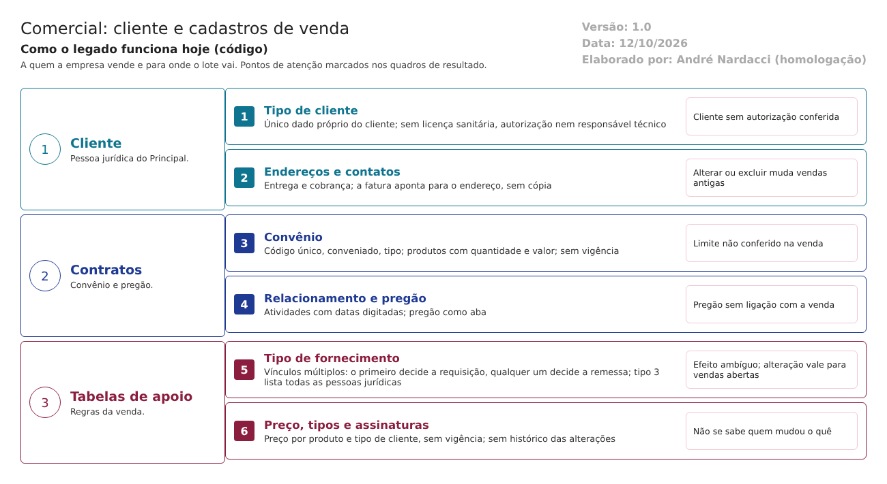

Objetivo
Este documento descreve os cadastros de venda do Comercial do LabMedSys: - o cliente e os dados dele (tipo, endereços, contatos); - os convênios, com os produtos e as quantidades contratadas; - o relacionamento com o cliente e os pregões; - as tabelas de apoio: tipo de fornecimento, tipo de cliente, tipo de cobrança, preço e assinaturas.
Eles definem a quem a empresa vende e para onde o lote vai. Pela norma, os registros de distribuição precisam ter informações suficientes sobre os clientes abastecidos para permitir o recolhimento (RDC 658/2022, arts. 346 e 347).
Foi montado a partir do código do sistema legado. O que depende da prática da área está marcado como a validar. Os casos de teste estão no fim.
Escopo
- Telas do grupo Cliente: Endereço (que é a tela do cliente), Convênio e Relacionamento (com a aba de pregões).
- Tabelas de apoio: Tipo de Fornecimento, Tipo Pessoa Jurídica, Tipo Cobrança, Preço e Assinaturas (fora do menu).
Fora do escopo: o cadastro da pessoa jurídica, que fica no Principal.
Nomes das telas: como aparecem no menu. Os caminhos de código são relativos a 7.comercial/comercial/. Para encurtar: Cli/ = HSolutions.Comercial.UI/Areas/Cliente/, Tab/ = HSolutions.Comercial.UI/Areas/TabelaApoio/, Infra/ = HSolutions.Comercial.Infrastructure/.
Visão geral do processo

- A pessoa jurídica é cadastrada no Principal.
- No Comercial, a tela Endereço lista as pessoas jurídicas. Para vender a uma delas, define-se o tipo de cliente e cadastram-se os endereços (entrega e cobrança) e os contatos.
- As tabelas de apoio dizem como cada venda funciona: o tipo de fornecimento (convênio, cotação, guia de simples remessa) e o preço por tipo de cliente.
- Quando há contrato, o convênio registra os produtos, as quantidades e os valores.
- O relacionamento registra atividades com o cliente e os pregões de que ele participa.
Descrição funcional das etapas
1. Cliente: tipo, endereços e contatos
Regras de negócio
- RN001 – O cliente é uma pessoa jurídica do Principal, lida pela API. A tela Endereço lista todas, com busca por código e nome (
Cli/Controllers/EnderecoController.cs:200-240). - RN002 – Para vender, o cliente precisa de um tipo de cliente ("O Tipo Cliente é obrigatório.") (
Cli/Controllers/EnderecoController.cs:242-300). É o único dado próprio do cliente no Comercial (TBL_COMPLEMENTO_CLIENTE). - RN003 – Não há licença sanitária, autorização de funcionamento, responsável técnico nem situação cadastral do cliente. A venda não confere se o cliente pode receber medicamentos.
- RN004 – A requisição só lista clientes com tipo de cliente. Exceção: para o tipo de fornecimento de número 3, a lista traz todas as pessoas jurídicas do Principal, inclusive fornecedores, sem tipo de cliente (
HSolutions.Comercial.UI/Areas/Cotacao/Controllers/RequisicaoController.cs:667-686). O número está fixado no código. - RN005 – Os endereços têm tipo entrega ou cobrança. Pode haver vários de entrega; um só de cada outro tipo. A conferência existe na alteração, mas está comentada na inclusão (
Cli/Controllers/EnderecoController.cs:65-140). - RN006 – O CEP preenche o endereço por consulta (
Cli/Controllers/EnderecoController.cs:363). - RN007 – A fatura aponta para o endereço do cadastro, não guarda uma cópia (
TBL_FATURA.ID_ENDERECO). - Alterar o endereço muda o que as faturas antigas mostram.
- Excluir o endereço (exclusão lógica) deixa o endereço de entrega em branco na visualização da fatura, porque a busca ignora os excluídos (
HSolutions.Comercial.UI/Areas/NotaFiscal/Controllers/FaturaController.cs:114, comInfra/Cliente/ClienteRepository.cs:149). - O Estoque guarda uma cópia do endereço na remessa (
3.estoque/app/LaboSys_BLL/bllRemessa.cs,EnderecoDestino). O Comercial, não. - RN008 – Os contatos têm nome, cargo, telefones e e-mail (
Cli/Controllers/ContatoController.cs:81).
Telas do sistema
| Módulo | Tela | Finalidade |
|---|---|---|
| Principal | Pessoa Jurídica | Cadastro da empresa cliente |
| Comercial | Endereço | Tipo de cliente, endereços e contatos |
2. Convênio
Regras de negócio
- RN009 – O convênio exige código (único), conveniado e tipo de fornecimento (
Cli/Controllers/ConvenioController.cs:203-262;Cli/Validation/ConvenioValidation.cs:17-22). O conveniado vem das pessoas jurídicas marcadas como cliente no Principal, com tipo de cliente. - RN010 – Cada produto do convênio tem quantidade e valor, sem produto repetido (
Cli/Validation/ConvenioValidation.cs:32-64). - RN011 – O convênio não tem vigência (data de início e fim) nem situação. Fica válido enquanto houver produto com saldo.
- RN012 – Não se exclui convênio que já tem requisição (
Cli/Controllers/ConvenioController.cs:108-130). - RN013 – O limite do convênio não é conferido na requisição (fluxo 2, RN017).
Telas do sistema
| Módulo | Tela | Finalidade |
|---|---|---|
| Comercial | Convênio | Código, conveniado, tipo e produtos |
3. Relacionamento e pregões
Regras de negócio
- RN014 – O relacionamento registra atividades com o cliente: descrição, contato, data prevista, data de execução e situação. As datas são digitadas (
Cli/Controllers/RelacionamentoController.cs:253-300). - RN015 – A aba de pregões registra o código, a data, o vencimento, o produto, a quantidade, o valor e a situação (aberto, realizado, cancelado, prorrogado) (
Cli/Controllers/RelacionamentoController.cs:377-449;Hsolutions.Comercial.DB/dml.sql:27-36). O pregão não se liga à cotação nem à requisição. Correção do reconhecimento: o pregão tem tela, como aba do Relacionamento.
Telas do sistema
| Módulo | Tela | Finalidade |
|---|---|---|
| Comercial | Relacionamento | Atividades e pregões do cliente |
4. Tabelas de apoio
Regras de negócio
- RN016 – Tipo de fornecimento: descrição e um ou mais vínculos (convênio, cotação, contabilidade, guia de simples remessa) (
Tab/Controllers/TipoFornecimentoController.cs:40-60). Os vínculos são usados de dois jeitos: - na requisição, vale só o primeiro vínculo da lista (fluxo 2, RN007);
- na fatura, vale ter o vínculo guia de simples remessa em qualquer posição (fluxo 3, RN006).
- RN017 – O tipo de fornecimento pode ser alterado depois de usado. A mudança vale para as requisições em aberto: a decisão de gerar a remessa é tomada na hora da fatura, pelo vínculo atual. Não se exclui tipo que já tem convênio (
Tab/Controllers/TipoFornecimentoController.cs:100-115). - RN018 – Preço: um valor por produto e tipo de cliente. É o preço sugerido na cotação e na requisição (
HSolutions.Comercial.UI/Areas/NotaFiscal/Controllers/PrecoController.cs). Sem vigência: alterar o preço muda a sugestão na hora, sem guardar o anterior. - RN019 – Tipo de cliente e tipo de cobrança: descrição; não se exclui o que está em uso (
Tab/Controllers/TipoClienteController.cs:96-107). - RN020 – Assinaturas (fora do menu): os nomes e cargos impressos nos relatórios. O registro de histórico dessa tela está comentado (
Tab/Controllers/AssinaturasController.cs:80).
Telas do sistema
| Módulo | Tela | Finalidade |
|---|---|---|
| Comercial | Tipo de Fornecimento, Tipo Pessoa Jurídica, Tipo Cobrança, Preço | Regras de cada venda |
| Comercial | Assinaturas (fora do menu) | Assinaturas dos relatórios |
5. Regra geral: histórico
- RN021 – O código-base do Comercial tem um serviço de histórico de alterações (
HSolutions.Comercial.UI/Controllers/ComercialControllerBase.cs:37-38, 154-162), mas nenhuma tela o chama: a única chamada está comentada (RN020). As gravações usam uma biblioteca compilada, sem código-fonte. A confirmar no teste: se ela grava algum histórico por conta própria.
Pontos de atenção
1. Sem dados para saber se o cliente pode receber medicamentos (RN003). Não há licença sanitária, autorização de funcionamento nem responsável técnico. Isso é exigido pelas Boas Práticas de Distribuição (RDC 430/2020), fora da RDC 658, mas a empresa responde pelo destino do lote. A validar com a GQ: onde isso é conferido hoje.
2. Qualquer pessoa jurídica pode virar cliente num tipo de fornecimento (RN004). O número 3 está fixado no código e abre a lista inteira do Principal, inclusive fornecedores.
3. O endereço da venda não fica guardado na fatura (RN007). Alterar ou excluir um endereço muda ou apaga o destino das vendas antigas no Comercial. Num recolhimento, o endereço de entrega pode estar errado ou em branco (arts. 346 e 347). Só a remessa do Estoque guarda a cópia.
4. Sem histórico das alterações (RN021). Não se sabe quem mudou um preço, um endereço ou um convênio, nem quando (art. 125).
5. Convênio sem vigência e sem limite conferido (RN011, RN013).
6. Tipo de fornecimento com efeito ambíguo (RN016, RN017). O primeiro vínculo decide a requisição; qualquer vínculo decide a remessa; e uma alteração muda requisições já abertas.
7. Preço sem vigência (RN018). Não se sabe qual era o preço sugerido numa data.
8. Pregão isolado (RN015). Não se liga à cotação nem à venda.
Casos de teste
Dados:
- Uma pessoa jurídica TESTE no Principal, marcada como cliente.
- Uma pessoa jurídica TESTE FORNECEDOR, marcada só como fornecedor.
- O produto TESTE PRODUTO ACABADO (fluxo 2).
- Usuários t.admin e t.semadmin.
| Caso | O que fazer | Resultado esperado |
|---|---|---|
| CT-COM-034 | Na tela Endereço, abrir a pessoa jurídica TESTE e salvar sem tipo de cliente |
"O Tipo Cliente é obrigatório." (RN002) |
| CT-COM-035 | Dar o tipo de cliente; cadastrar um endereço de entrega e um de cobrança | Gravados (RN005) |
| CT-COM-036 | Cadastrar um segundo endereço de cobrança | Pela regra, "Esse tipo endereço já está cadastrado." Registrar se aceitar na inclusão (RN005) |
| CT-COM-037 | Procurar no cadastro do cliente a licença sanitária, a autorização de funcionamento e o responsável técnico | Registrar a ausência (RN003, ponto 1) |
| CT-COM-038 | Numa requisição com o tipo de fornecimento número 3, procurar a TESTE FORNECEDOR na lista de clientes |
Pela regra, não aparece. Registrar se aparecer (RN004, ponto 2) |
| CT-COM-039 | Depois de faturar para o cliente TESTE (fluxo 3), alterar o endereço de entrega e visualizar a fatura antiga |
Pela norma, a fatura mostra o endereço da época. Registrar se mostrar o novo (RN007, ponto 3) |
| CT-COM-040 | Excluir o endereço de entrega usado na fatura e visualizar a fatura | Registrar se o endereço ficar em branco (RN007, ponto 3) |
| CT-COM-041 | Criar o convênio TESTE com o código de um convênio existente |
Recusa pelo código repetido (RN009) |
| CT-COM-042 | Incluir produtos no convênio TESTE; procurar a vigência |
Produtos gravados. Registrar a ausência de vigência (RN010, RN011) |
| CT-COM-043 | Excluir um convênio que já tem requisição | "Não pode excluir convênio que já possui uma requisição!" (RN012) |
| CT-COM-044 | Registrar uma atividade de relacionamento e um pregão TESTE |
Gravados; registrar que o pregão não aparece na cotação nem na requisição (RN014, RN015) |
| CT-COM-045 | Criar o tipo de fornecimento TESTE MISTO com os vínculos cotação e guia de simples remessa; usar numa requisição e faturar |
Registrar qual vínculo valeu na requisição e se a remessa foi gerada (RN016, ponto 6) |
| CT-COM-046 | Com uma requisição em aberto, tirar o vínculo guia de simples remessa do tipo dela; faturar | Registrar se a remessa deixou de ser gerada (RN017, ponto 6) |
| CT-COM-047 | Alterar o preço do TESTE PRODUTO ACABADO e procurar o preço anterior |
Registrar a ausência de histórico e de vigência (RN018, RN021) |
| CT-COM-048 | Alterar um endereço e um preço; pedir à TI ou ao DBA o histórico dessas alterações | Registrar se existe (RN021, ponto 4) |
Prioridade (testes por risco): CT-COM-039, 040, 037, 038 e 048 primeiro. Eles tocam: - o destino da venda que muda ou some depois da fatura; - o cliente sem autorização conferida; - a pessoa jurídica qualquer como cliente; - a falta de histórico.